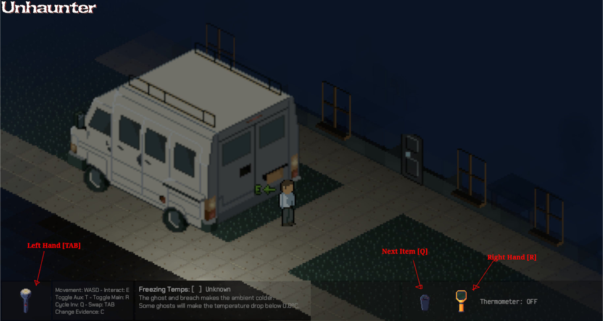

Second playtests of the game
·
3min
·
deavidsedice
After the release of Version 0.1.3, I got Sl4cer to try again, and Lomofear too; and he's on Windows.
Playtest with Sl4cer - 0.1.3 - 2024-03-12
- Overall the game was found to be very entertaining with almost no issues to speak of.
- Ghost hunting internal state does not reduce when not hunting. This leads to the player exiting the location, the ghost calming, yet when the player enters again the ghost insta-hunts.
- Sanity was lost during out of the house excursions - not wrong but... unexpected?
- Player was not going back to the van, so sanity was not restored
- Screen becoming red to indicate damage was preventing the player from viewing the game.
- Player had blue light protection on the monitor.
- However, it was very useful to convey risk and make the player flee.
- Health recovery is too strict. Takes too much time to begin healing.
- Typo was found: "breach" misspelled in quick evidence help text.
- Controls might be hard to grasp.
- University map was playable; lighting takes 140ms, which is noticeable if mentioned, but I had to point it out for the player to notice.
- Ghost might be a bit difficult. Maybe "angriness" should mostly reset to 0 or to much lower values so we get a hunt once in a while; right now it seems that the hunts quickly become very recurring.
- Maybe set the angry max level to a random value, and each time it resets, set it to another random value? So we never know if it's going to attack soon or late.
- Craft Repellent still has no feedback.
- Exit truck and end mission might be too close. (This was earlier feedback that was missed)
- Player is worried about misclicking the End mission button.
- Suggestion: Maybe Craft Repellent and End mission should have a "click & hold" mechanic that fills a bar for 1 second, to give feedback and therefore confirm that the user wants to do that?
- Definitely too many items in inventory. The player was scrambling around and looking for a key to cycle inventory in reverse.
- Player attempts too often to run the flashlight in "HI" mode, overheats, and then it does not turn on at all. Probably we should make this mechanic more lenient.
- Ghost was able to go outside the house in the university.
Additional:
- R and T are "left" and "right" on the keyboard but they map in reverse to the gear in the UI which can be confusing. Maybe instead of changing the UI, switch [T] for [TAB]?

Playtest with Lomofear - 0.1.3 - 2024-03-13
- Building on Windows is easy - just Rustup install, Windows VS Redistributables, Cargo run.
- Player was very fast on picking up the game basics.
- They went to the van very often (sl4cer almost never went).
- First game took 16 minutes, 2 repellent attempts.
- Ghost was hard to see, the Breach wasn't seen at all; it needed to be explained.
- There's a problem since it seems we need to coach players to understand the game.
- WASD controls felt very natural.
- Flashlight in HI turns off and confuses the player - probably should fall back to "LOW".